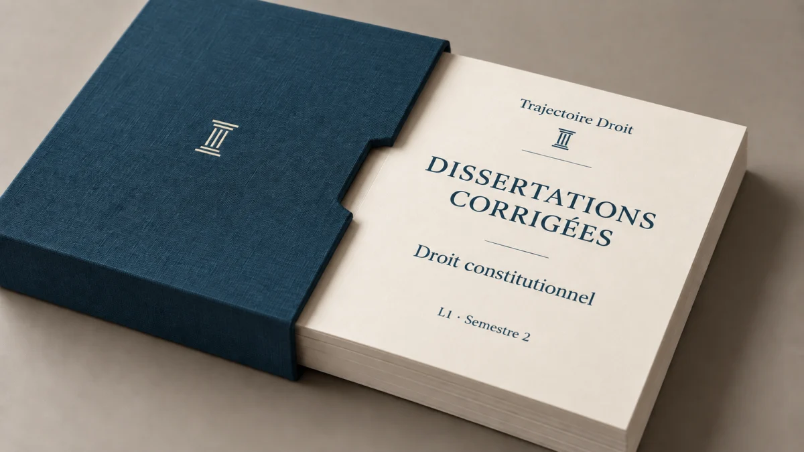

Dissertation corrigée
Introduction au droit
10 sujets de dissertation corrigés. Pour chacun, j'analyse d'abord le sens de chaque mot du sujet, puis je rédige la copie modèle au propre.
19,99 €
Une dissertation juridique consiste à démontrer une idée à partir d'un sujet, en se servant du cours pour la prouver. On commence par rassembler ses arguments au brouillon. En les classant, on voit apparaître la tension du sujet, autrement dit deux exigences qui s'opposent, et on la formule en problématique. On construit ensuite un plan en deux parties, chacune divisée en deux sous-parties, qui répond à cette problématique. L'introduction représente près d'un tiers de la copie, et l'exercice se termine sans conclusion, à la différence de la dissertation de philosophie.
Les dissertations corrigées du premier semestre de L1
Chaque sujet commence par une page de brouillon, qui analyse les mots du sujet avant de poser la problématique et le plan. La copie modèle suit, avec une introduction complète et un plan en deux parties. Les deux autres PDF de dissertations corrigées du premier semestre portent sur le droit constitutionnel et sur l'histoire du droit.
Paiement sécurisé. Tes fichiers sont envoyés par email dès la confirmation.
La dissertation juridique est un exercice d'argumentation, dans lequel on démontre une idée. Le sujet pose un problème à résoudre. Pour le résoudre, il faut donc utiliser ses connaissances et construire une démonstration.
Un article ou un arrêt est utile dans la copie seulement s'il prouve l'idée de la partie. C'est le cas de l'article 16 de la Constitution, qu'on cite pour montrer qu'en cas de crise grave le président peut exercer presque tous les pouvoirs seul.
Attention à l'ordre. Il faut trouver la problématique avant le plan, puis construire le plan pour y répondre.
On rassemble d'abord ses idées au brouillon, puis on les classe en grandes idées-forces. Ce classement fait apparaître la tension du sujet. On la formule alors en problématique avant de bâtir le plan. Les idées-forces deviennent ensuite les parties, et leurs titres répondent à cette problématique.
L'introduction compte aussi beaucoup, car elle représente un tiers de la copie. Le correcteur la lit en premier, donc elle lui donne sa première impression, qui est souvent la bonne. De plus, en droit, la dissertation se termine sans conclusion. Attention, ne confonds pas avec la dissertation de philosophie du lycée, qui se termine par une conclusion.
Il faut numéroter les pages du brouillon et y passer du temps, parce que la qualité de la copie dépend de ce travail.
Il faut commencer par lire le sujet plusieurs fois, lentement, pour comprendre la question posée. On regarde d'abord la ponctuation et les accords au singulier ou au pluriel. Un sujet au pluriel, comme « les sources du droit », demande ainsi d'étudier plusieurs sources. On vérifie ensuite les mots de liaison et les articles.
Un sujet posé comme une question demande une prise de position. Un sujet avec « et » oblige à lier les deux termes dans chaque partie. On évite donc de traiter l'un dans le I et l'autre dans le II.
Un sujet sans question, comme « la rétroactivité en droit pénal », doit être précisé en introduction.
Ensuite, on note au brouillon toutes les idées liées au sujet, qu'elles viennent du cours, des TD ou des lectures. On écrit tout sans trier, et le classement vient seulement après.
Pour classer, on rapproche les idées qui se complètent et on repère celles qui s'opposent. On met aussi de côté celles qui ne répondent pas au sujet. Ainsi, ce classement fait apparaître deux ou trois grandes idées directrices, les idées-forces. Elles deviennent ensuite les parties et les sous-parties.
Pour bien connaître la matière avant l'examen, mes fiches complètes reprennent chaque notion avec ses définitions et sa jurisprudence. Les débats doctrinaux sont les discussions entre les auteurs qui écrivent sur le droit. Les fiches présentent aussi ces débats. Tu y trouves la matière nécessaire au brouillon.
L'ordre reste toujours le même. D'abord, l'analyse du sujet fait apparaître la problématique. Le plan répond ensuite à cette problématique. Enfin, l'introduction présente le tout au correcteur.
Il faut définir chaque terme du sujet, puis étudier le rapport entre ces termes. C'est aussi le moment de la comparaison, qui aide à comprendre une notion en la rapprochant d'une notion voisine ou opposée. Si le sujet parle de l'État fédéral, on le compare ainsi à l'État unitaire. Quand le sujet contient un « et », on définit chaque terme séparément, puis on cherche le lien entre les deux. À ce stade, le sujet reste ouvert. On explore donc toutes les pistes, sans se limiter trop tôt à une seule lecture du sujet.
Il faut délimiter le sujet dans le temps et dans l'espace, puis fixer la branche du droit qu'il concerne. On écarte ce qui n'entre pas dedans, en justifiant ce choix. Cette justification évite le hors-sujet. La page exemple de délimitation du sujet en droit détaille les questions à poser au sujet et donne trois sujets délimités pas à pas. L'intérêt du sujet, ce sont les raisons pour lesquelles il mérite d'être traité. On montre ensuite cet intérêt du sujet. Ces raisons peuvent venir de l'histoire ou de l'actualité, mais aussi des réformes récentes ou d'une comparaison avec d'autres pays. Ce point est le plus long de l'introduction. C'est aussi celui qui distingue le plus une copie des autres, car il dépend des connaissances de chacun.
Une fois les idées classées en idées-forces, on écrit la problématique au brouillon. Elle exprime la tension du sujet, soit l'opposition entre deux exigences contraires. Prenons l'application de la loi dans le temps en droit des contrats. D'un côté, la sécurité juridique des parties exige que la loi ancienne continue de s'appliquer à leur contrat, puisqu'elles l'ont signé sous cette loi. De l'autre, l'unité du droit impose d'appliquer tout de suite la loi nouvelle. On formule donc cette tension en une question qui englobe les deux parties. Le plan donne ensuite la réponse argumentée à cette problématique.
Les idées-forces deviennent ensuite un plan thématique en deux parties, chacune divisée en deux sous-parties, qui répond à la problématique. Ce plan doit couvrir tout le sujet et suivre un ordre logique. Ses parties gardent aussi une longueur proche. Les titres affirment une idée et reprennent des mots de la problématique ou du sujet, sans verbe conjugué ni ponctuation. Pour le vérifier, on relit le plan seul, et on doit pouvoir retrouver le sujet à partir de lui. Les arguments les plus forts se placent au centre du devoir, dans le I.B et le II.A. Des plans types peuvent aussi dépanner, comme notion puis régime, ou principe puis exception. Un autre plan type affirme une idée dans le I, puis la nuance dans le II.
L'introduction se rédige en sept temps. Elle part d'une accroche large et se resserre jusqu'à l'annonce du plan, comme un entonnoir. On peut la préparer au brouillon, car c'est la seule partie qu'on rédige à l'avance. Les parties se rédigent ensuite directement au propre. Chaque partie s'ouvre par un chapeau qui annonce ses sous-parties, et chaque sous-partie défend une idée directrice à l’aide d’arguments développés. Pour chaque argument, on affirme l’idée, puis on explique ce qu’elle signifie. On apporte ensuite les connaissances et l’exemple qui permettent de la prouver. Enfin, on relie ce résultat à la question du sujet. Le nombre d’arguments et leur longueur dépendent donc de ce qu’il faut démontrer, en gardant un ensemble équilibré. Entre les parties et entre les sous-parties, il faut placer une transition, qui explique comment on passe d'une idée à la suivante.
Prenons une copie qui veut montrer comment la justice administrative devient indépendante de l’administration. L’étudiant pourrait écrire seulement « loi du 24 mai 1872, puis arrêt Cadot de 1889 ». Le lecteur connaît alors deux dates, mais il doit encore reconstruire ce qu’elles prouvent. Il faut donc expliquer ce qui change à chaque étape.
L’argument peut se développer ainsi. La justice administrative acquiert progressivement le pouvoir de trancher les litiges sans décision préalable de l’exécutif. Avec la loi du 24 mai 1872, le Conseil d’État reçoit le pouvoir de rendre lui-même la justice, au lieu de préparer une décision soumise à l’approbation du chef de l’État. Puis l’arrêt Cadot du 13 décembre 1889 marque l’abandon du ministre-juge. Le Conseil d’État accepte ainsi d’être saisi directement d’un recours contre une décision administrative, même sans texte lui donnant cette compétence. Ces deux étapes montrent donc comment le règlement des litiges se détache de l’administration active. Les dates servent alors à expliquer une évolution et à prouver l’idée de la sous-partie.
Mes cours particuliers permettent de s'entraîner sur ses propres sujets, avec une correction ligne par ligne. Pour réviser la matière en amont, la fiche de droit constitutionnel L1 rassemble aussi les notions qui tombent le plus en dissertation, comme la hiérarchie des normes et la pyramide de Kelsen.
L'introduction suit sept temps, toujours dans le même ordre, et elle occupe un tiers de la copie, soit une page sur trois, ou deux pages sur six.
L'accroche attire l'attention du correcteur avec un fait d'actualité ou un repère historique. Une citation brève et exacte convient aussi. Une phrase de lien la relie ensuite au sujet. C'est le seul temps facultatif. Sans accroche exacte, on peut donc s'en passer, car une accroche inventée de toutes pièces fait perdre des points. Des exemples de phrases d'accroche en droit, avec leur phrase de lien, montrent comment l'écrire.
On reprend l'énoncé pour dire de quoi la copie va parler, puis on définit les termes-clés du sujet. Quand le sujet contient un « et », il faut définir chaque terme séparément avant de lier les deux. Cette présentation fait aussi apparaître le problème de droit que le sujet soulève.
On précise ce que le sujet comprend, et on justifie les questions laissées de côté. Il est possible de limiter le sujet à une période ou à un pays, quand ces limites éclairent la question posée. Le correcteur comprend ainsi pourquoi la copie traite certaines questions et en écarte d'autres. La page sur la délimitation du sujet en droit applique cette démarche à trois sujets.
On situe ensuite le sujet dans le droit applicable à la question. Une réforme récente ou une évolution de la jurisprudence peut expliquer pourquoi la question se pose aujourd'hui. Pour un sujet sur le président sous la Vᵉ République, on peut aussi rappeler le fonctionnement des régimes précédents, si cette comparaison aide à comprendre ses pouvoirs.
Ce temps est le plus long. Il faut montrer pourquoi le sujet mérite d'être traité. On peut le replacer dans l'histoire ou dans l'actualité. Une réforme récente ou une comparaison avec d'autres pays montre aussi son intérêt. L'introduction devient ainsi personnelle, parce que l'intérêt dépend des connaissances de chaque étudiant.
La problématique se formule comme une phrase interrogative, qui exprime la difficulté juridique à résoudre. Cette question découle de la tension expliquée juste avant. Elle englobe les deux parties, qui lui apportent ensuite une réponse argumentée.
On annonce les deux grandes parties, qui découlent logiquement de la problématique. Le détail des arguments reste pour les développements. Ainsi, aucun point prévu pour le développement ne se traite dans l'introduction.
Voici la démarche appliquée à un sujet classique, sans rédiger toute la copie. On voit ainsi comment le brouillon fait apparaître la problématique, puis le plan qui y répond.
Le sujet est posé comme une question, donc il appelle une prise de position. On définit d'abord « monarque ». C'est un chef d'État qui concentre un pouvoir personnel et durable. On le compare ensuite au cadre républicain, où le pouvoir est élu et limité, et où celui qui l'exerce doit rendre des comptes. La formule « monarque républicain » réunit donc deux idées qui s'opposent, et la copie va se servir de cette tension.
Au brouillon, on note tout ce qui vient à l'esprit. Pour ce sujet, on pense d'abord à l'élection au suffrage universel direct depuis 1962 et à l'article 16. Le droit de dissolution et le domaine réservé viennent ensuite. Le contreseing, c'est la signature d'un ministre exigée pour certains actes du président. On le note aussi. La responsabilité politique du gouvernement et le rôle du Parlement s'ajoutent à cette liste. Ainsi, en classant ces idées, on voit apparaître deux idées-forces. D'un côté, le président dispose de pouvoirs personnels très étendus. De l'autre, ce pouvoir reste encadré par la Constitution et par le fonctionnement des institutions.
Les deux idées-forces font apparaître la tension du sujet, et la problématique se formule alors presque d'elle-même. Le président de la Vᵉ République exerce des pouvoirs étendus, mais ces pouvoirs restent encadrés par la Constitution. La problématique peut donc se formuler ainsi. Dans quelle mesure les limites constitutionnelles des pouvoirs du président de la Vᵉ République permettent-elles d'écarter sa comparaison avec un monarque ? Le plan répond ensuite à cette question. I. Un président doté de pouvoirs quasi monarchiques. II. Un pouvoir présidentiel borné par la République.
Il faut ensuite vérifier les titres. Chacun affirme une idée et reprend les mots du sujet, sans verbe conjugué. Sous le I, le chapeau annonce les deux sous-parties, par exemple l'autorité tirée de l'élection directe (I.A) puis les pouvoirs propres du président (I.B). Entre le I et le II, la transition montre le passage d'une idée à l'autre. En effet, la Constitution donne au président ces pouvoirs étendus, mais elle fixe aussi leurs limites.
Pour vérifier un titre, on peut se servir du test du micro-trottoir. Par exemple, quelqu’un te demande dans la rue si le Tribunal des conflits est le juge du conflit ou de l’unité. Si tu lui réponds « La naissance du Tribunal des conflits », il sait que tu vas lui parler de son histoire. Il attend encore ta réponse, car ce titre ne dit pas ce que fait le Tribunal dans le litige.
On peut lui répondre que le Tribunal permet d’éviter un second refus de juger. D’abord, un juge a refusé de traiter l’affaire et sa décision ne peut plus faire l’objet d’un recours. Si le second juge examine le même litige et estime qu’il relevait du premier ordre, il doit alors saisir le Tribunal des conflits. Cette procédure donne son idée à la sous-partie. Le titre peut donc devenir « Le renvoi au Tribunal des conflits pour éviter un second refus de juger ».
Chaque sujet commence par une page où j'analyse le sens de chaque mot. La copie modèle suit, rédigée au propre avec une introduction en 7 étapes et un plan en deux parties.
10 sujets de dissertation corrigés. Pour chacun, j'analyse d'abord le sens de chaque mot du sujet, puis je rédige la copie modèle au propre.
10 dissertations corrigées. Chacune commence par l'analyse du sujet mot par mot, et se termine par la copie modèle rédigée au propre.
Sur 10 sujets de dissertation, tu vois d'abord le travail au brouillon sur le sens de chaque mot, puis la copie modèle rédigée au propre.

10 sujets de dissertation corrigés. Pour chacun, j'analyse d'abord le sens de chaque mot du sujet, puis je rédige la copie modèle au propre.
10 dissertations corrigées. Chacune commence par l'analyse du sujet mot par mot, et se termine par la copie modèle rédigée au propre.
Sur 10 sujets de dissertation, tu vois d'abord le travail au brouillon sur le sens de chaque mot, puis la copie modèle rédigée au propre.
34 corrigés disponibles au total, de la L1 à la L3.
Tu cherches un sujet de droit administratif ? En attendant le pack complet, plusieurs copies modèles sont gratuites et rédigées en entier. La première est la dissertation corrigée sur le contrôle du juge administratif, et la deuxième porte sur le Conseil d'État et la loi. La troisième traite du sujet « La faute lourde, une franchise de responsabilité ». Enfin, une autre page propose deux sujets de plus, sur le juge administratif et la police administrative, avec une banque de sujets classiques par semestre.
La dissertation demande une démonstration personnelle. Les connaissances servent donc à prouver l'idée défendue dans chaque partie.
La problématique naît du classement des idées-forces. Il faut donc la formuler avant de bâtir le plan, qui y répond ensuite partie par partie.
Un plan catalogue range les sources, par exemple la loi dans le I et la jurisprudence dans le II, sans aucune réflexion. Le plan doit au contraire être thématique et démontrer une idée, surtout quand le sujet contient un « et ».
Les titres affirment une idée, reprennent les mots du sujet et ne contiennent ni verbe conjugué ni ponctuation. On doit retrouver le sujet rien qu'en les lisant.
L'introduction représente un tiers de la copie, et le correcteur la lit en premier. Si elle est trop courte, le correcteur aborde la copie avec une mauvaise impression, qui reste souvent jusqu'à la note finale.
En droit, la dissertation n'a pas de conclusion. Si la démonstration est réussie, le correcteur a déjà compris la réponse de la copie. L'ouverture se fait dans l'intérêt du sujet, en introduction.
Voici deux erreurs classiques, relevées sur des copies puis corrigées, sur le sujet du président de la Vᵉ République.
« I. Le président de la Vᵉ République dispose de pouvoirs étendus »
« I. Un président doté de pouvoirs quasi monarchiques »
Le titre d'avant décrit ce que fait le président, avec un verbe conjugué. Le titre corrigé, lui, affirme une idée et reprend les mots du sujet, sans verbe conjugué ni ponctuation.
« I. Les textes qui encadrent les pouvoirs du président
II. La jurisprudence relative aux pouvoirs du président »
« I. Un président doté de pouvoirs quasi monarchiques
II. Un pouvoir présidentiel borné par la République »
Le plan d'avant range les sources, d'abord les textes puis la jurisprudence, sans rien démontrer. C'est donc un plan catalogue. Le plan corrigé défend une thèse qui répond à la tension du sujet.
Pour aller plus loin, tu peux lire aussi la méthode du cas pratique, la méthode du commentaire d'arrêt et, en histoire du droit ou en droit constitutionnel, la méthode du commentaire de texte juridique.
Voici des dissertations corrigées, avec l'introduction construite et le plan déroulé, pour voir la méthode en action.
Les 22 dissertations corrigées gratuites du site, avec leur plan et la forme de chaque sujet →
Toute la méthodologie juridique, cas pratique, commentaire et note de synthèse →
Les fiches complètes présentent chaque notion avec ses définitions et sa jurisprudence, ainsi que les débats qu'elle soulève. Tu y trouves de quoi construire les idées principales de ta dissertation. En cours particulier, je relis tes dissertations avec toi, du plan jusqu'aux transitions.
Voir les fiches complètesReçois mon guide « Réviser le droit sans s'épuiser », gratuitement.
Désinscription en 1 clic · Aucune carte bancaire